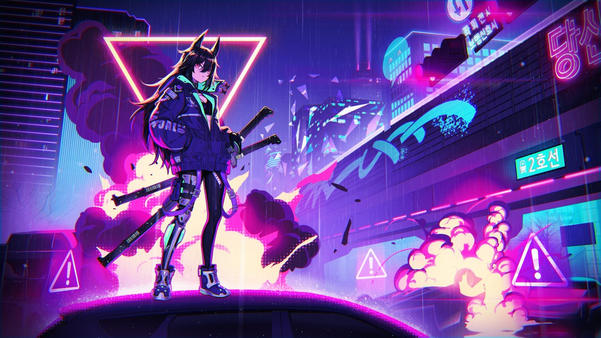

Futaba _ Webs 🕸🕸🎃🕸🕸
Specialist VS Generalist? 🕸🕸🎃🕸🕸
Today’s article is going to focus on an interesting topic in tech, one that carries over to Cyber Security as well, Specialist VS Generalist. You’ve seen time and time again heated debates on whether or not one should be a specialist or a generalist regardless of what field they pursue in tech: Software Engineering, Cyber Security, IT, etc. I’m going to compare and contrast the two in order to fundamentally deduce which of the two is ultimately better, in my opinion that is. Feel free to disagree and leave your overall opinions in the comments section below.
🃠Article 🃠Glossary 🃠Catalog 🃠Home 🃠Search Mode🃠Article Glossary
🕸 Synopsis 🕸
Today’s article is going to focus on an interesting topic in tech, one that carries over to Cyber Security as well, Specialist VS Generalist. You’ve seen time and time again heated debates on whether or not one should be a specialist or a generalist regardless of what field they pursue in tech: Software Engineering, Cyber Security, IT, etc. I’m going to compare and contrast the two in order to fundamentally deduce which of the two is ultimately better, in my opinion that is. Feel free to disagree and leave your overall opinions in the comments section below.
🕸 Article Topics 🕸
I'll be discussing the following topics in order: 🃠What Is a Specialist? 🃠Pros to Being a Specialist? 🃠What Is a Generalist? 🃠Pros to Being Versatile? 🃠Which Is Better? You can click on any of the topics to simply check that one out if it interests you! NOTE: Articles are read from LEFT to RIGHT via 2 columns! Read the first column all the way down and then move to the next one!
🕸 Key Links 🕸
Here's a quick run down on all the main links that are in the article in case you want to check them out first. 🃠LinkedIn Version
🃠Specialist VS Generalist?
What Is a Specialist? 🕸🕸🎃🕸🕸
Specialists are those that focus on ONE particular area in tech, the many skill sets that pertain to said area.
For example, you might have heard of the term of a “full stack†web developer where they have a certain stack they specialize in for the kind of web applications they specialize in developing
🃠HTML
🃠CSS
🃠JavaScript
🃠Python (Django for example)
🃠SQL
And the list goes on.
Another example, and this goes within the realm of those that specialize in offensive security such as penetration testing for example, would be the “types†of penetration testers that exist: network penetration testers, WAP penetration testing, API penetration testers, etc.
Typically, when it comes to Cyber Security, people often specialize in ONE particular area on the spectrum for whatever area it is they prefer, whether it be: blue teaming, red teaming, purple teaming, even people that specialize as a Gray Hat hacker such as myself for example.
Pros to Being a Specialist? 🕸🕸🎃🕸🕸
The obvious PRO to being a specialist is that you SPECIALIZE within that domain! You’re an expert at it!
Another MAJOR benefit, although this is a bit controversial, is you have “less†to learn/focus on. I know this one will TRIGGER many, but hear me out on this one.
When it comes down to a generalist vs a specialist, the BIGGEST difference is the overall learning curve and amount of stuff you NEED to know and keep up with. Generalists are BROAD and all over the place, meaning they have A LOT to keep up with, whereas, compared to specialists, they just have to stick to whatever stack or area’s/tool-sets they specialize in and that's it.
This is WHY, whenever people say offensive security is HARD to get into, which it is, it’s because of the aspect of having to be a generalist, where your skill sets need to be diverse, which can be difficult and time consuming to master. You’ve seen how BROAD my skill sets are right? It took me YEARS to learn and MASTER all that I know and I haven’t even scratched the surface yet. It’s the price you pay for being a generalist You can’t be good at EVERYTHING, HOWEVER, in trying to do so, you risk being overloaded with A LOT you need to know and be familiar/proficient with.
Cons to Being a Specialist? 🕸🕸🎃🕸🕸
The BIGGEST CON to being a specialist is the lack of diversity and versatility of your skill sets. I know this might be a bit hard to understand, but bear with me.
Remember how I’ve spoken on the matter of whether or not you “need†to know how to code in order to be a hacker? You DON’T, HOWEVER, that core lack of diversity with your skill sets could make stuff like: API penetration testing as well as Web application penetration testing HARDER to master, as you’ll be locked out of more granular skill sets that could aid you in finding MAJOR security flaws within a system which is CRUCIAL if you want to be a GOOD ethical hacker.
The biggest makeup for this flaw is combining specialist to achieve a greater task at hand. HOWEVER, this is still far less potent than those that are made up of generalists. The broader the better!
What Is a Generalist? 🕸🕸🎃🕸🕸
Generalists are people such as myself that tend to have a broad and diversified skill set.
Ever read up on some of my articles as well as my overall skillets and asked yourself “how the f**k does he know all this sh*t?†Yeah, that’s what I mean by being a specialist.
Pros to Being Versatile? 🕸🕸🎃🕸🕸
The BIGGEST pro to being a generalist is you have the right “tool†for every situation you might find yourself in, increasing your odds of success during many complex situations.
For example, during one of my CTF runs against some folks, part of the reason I was able to solve the “FindMe†challenge that’s also hosted on my custom CTF server, was because I had the following skill sets
🃠Reverse Engineering
🎃Malware analysis skills
🃠Code Review Skills
🃠Scripting Skills
🃠Forensics skills
And the list goes on. I had the right tool for every situation, increasing my odds of success, allowing me to come in first place for solving the high level challenge.
Cons to Being Versatile? 🕸🕸🎃🕸🕸
The BIGGEST CON to being a generalist is you HAVE to know A LOT. You CAN’T be good at everything, however, in the realm of a GOOD generalist, the goal IS to be GOOD at EVERYTHING, at least the areas you plan to be a specialist at being a generalist in that is, if that makes sense?
Which Is Better? 🕸🕸🎃🕸🕸
Overall being a generalist is better. It also makes you more favorable and valuable on the job market as it’s what employers are looking for, which also pays you the big bucks in the long run, as knowing more means they have to PAY you more! My skill sets are WORTH six figures, so in the event I'm asking for compensation, I NEVER settle for anything less!
If you enjoyed this post give it a thumbs up! I’ll be keeping track of whose reacting from now on as there is a “special†reason for it. Just know the more you support my content the more there is in stored!
- The Hacker Who Laughs 🕸🕸🎃🕸🕸
